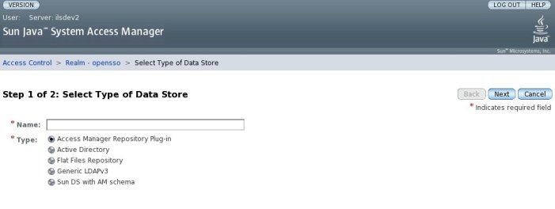

<div><table cellpadding="0" cellspacing="10" border="0" align="left" valign="top">
   <col WIDTH=100%>
    <tr><td></td></tr>

<tr><td><font size="2">
<i>You can post comments and questions regarding the documentation provided below on the <a href="http://wiki.java.net/bin/view/Projects/DocFeedback" target="_blank">Documentation Feedback Wiki Page</a>. The page will open in a new window.</i>
</font></td></tr>

    <tr><td><h2>Building Custom Identity Repository Service Plug-ins</h2>
    
<font size="2">
<ul style="list-style-type: none">
  <li><a href="plugin.html#gexsi">Identity Repository Service</a></li>
  <li><a href="plugin.html#gexvj">Default Identity Repository Service Plug-ins</a></li>
  <li><a href="plugin.html#gexzh">Writing Custom Identity Repository Service Plug-ins</a></li>
</ul>      

<p>An <i>identity repository</i> is a data store where information about users and groups
in a company or enterprise is stored. The OpenSSO Identity Repository Service
is a model by which plug-ins can be written that allow communication with different
types of identity repositories external to an installation of the OpenSSO server (including,
for example, LDAP-based data stores and Novell and Oracle databases).</p><a name="gexwt"></a>


<a name="gexsi"></a><h3>Identity Repository Service</h3>

<p>The Identity Repository Service provides a pluggable framework for managing external data stores
and databases. The main goals of the Identity Repository Service are:</p>
<ul>
<li>
<p>To provide a list of identity repositories that can provide user attributes for purposes of authentication and authorization.</p></li>
<li>
<p>To combine the attributes and values obtained from different repositories.</p></li>
<li>
<p>To specify one or more identity repository per realm to store OpenSSO service configurations for users and roles.</p></li>
</ul>

<p>The Java package <tt>com.sun.identity.idm</tt> contains the Identity Repository Service client interfaces provided
by the <tt>AMIdentityRepository</tt> and <tt>AMIdentity</tt> classes. <tt>AMIdentityRepository</tt> allows access to one or
more defined identity repositories and provides interfaces to search, create and delete identities. <tt>AMIdentity</tt>
represents an identity (such as a user, a group, or a role) managed
by the OpenSSO server and provides interfaces to set, modify and delete attributes,
and to assign and unassign services. OpenSSO services such as the Policy Service and
the Authentication Service use these interfaces to retrieve user attributes and to view
membership data.</p>

<a name="gexvj"></a><h3>Default Identity Repository Service Plug-ins</h3>

<p><tt>com.sun.identity.idm.IdRepo</tt> is the interface that needs to be implemented by an Identity Repository
Service plug-in. By default, the OpenSSO server includes the following plug-in implementations:</p>
<ul><li>
<p><tt>com.iplanet.am.sdk.AMSDKRepo</tt> is the implementation for Sun Java System Directory Server.</p></li>
<li>
<p><tt>com.sun.identity.idm.plugins.ldapv3.LDAPv3Repo</tt> is the implementation for Active Directory, Generic Lightweight Directory Access Protocol version 3 (LDAPv3), and Sun Java System Directory Server with Access Manager Schema.</p></li>
<li>
<p><tt>com.sun.identity.idm.plugins.files.FilesRepo</tt> is the implementation for the flat file repository.</p></li></ul>

<p>You can configure for any of these identity repositories with the OpenSSO administration console by selecting the realm under which the repository will be defined and clicking the Data Stores tab.</p>

<a name="gexzh"></a><h3>Writing Custom Identity Repository Service Plug-ins</h3>

<p>Following is the process to write a custom plug-in for the Identity Repository Service.</p>
<ol>
<li><p>Write the plug-in module.</p></li>
<li><p>Modify <tt>idRepoService.xml</tt> to set up the plug-in's configuration parameters.</p></li>
<li><p>Modify <tt>amIdRepoService.properties</tt> to display the new plug-in and configuration parameters in the OpenSSO console.</p></li>
<li><p>Rebuild and redeploy the <tt>openfm.war</tt>.</p></li>
</ol>
<a name="gexye"></a><h4>To Write A Custom Plug-in for the Identity Repository Service</h4><ol>
<li><b>Implement the <tt>com.sun.identity.idm.IdRepo</tt> class.</b><p>The following methods should be implemented:</p>
<hr><p><b>Note - </b>The sample code is taken from <tt>com.sun.identity.idm.plugins.files.FilesRepo.java</tt> which can be viewed in
the <a href="https://opensso.dev.java.net/source/browse/opensso/products/amserver/source/com/sun/identity/idm/plugins/files/">OpenSSO source code</a>.</p>
<hr>

<ul>
<li>
<p><tt>initialize(java.util.Map configParams)</tt>: The initialization refers to the configuration parameters for the plug-in defined using the OpenSSO console. See step 3 of this procedure for more information on these parameters.</p><pre>...
    /*
     * (non-Javadoc)
     * 
     * @see com.sun.identity.idm.IdRepo#initialize(java.util.Map)
     */
    public void initialize(Map configParams) {
        super.initialize(configParams);
        // Get the directory to store the identity information
        Set set = (Set) configParams.get(DIRECTORY);
        if (set != null &amp;&amp; !set.isEmpty()) {
            directory = (String) set.iterator().next();
            try {
                initDir(directory);
            } catch (IdRepoException ide) {
                initializationException = ide;
                debug.error("FilesRepo: Init exception", ide);
            }
        }
...</pre></li>
<li>
<p><tt>getSupportedTypes()</tt> and <tt>getSupportedOperations(IdType type)</tt>: <tt>getSupportedTypes()</tt> returns an <tt>IdType</tt> set (<tt>IdType.<i>USER</i></tt>, <tt>IdType.<i>ROLE</i></tt>, and so forth); basically the identities managed by the repository. <tt>getSupportedOperations(IdType type)</tt> returns an <tt>IdOperation</tt> set (<tt>IdOperation.<i>READ</i></tt>, <tt>IdOperation.<i>WRITE</i></tt>, and so forth); basically the operations which the repository supports.</p><pre>...
    /*
     * (non-Javadoc)
     * 
     * @see com.sun.identity.idm.IdRepo#getSupportedOperations(
     *      com.sun.identity.idm.IdType)
     */
    public Set getSupportedOperations(IdType type) {
        return (Set) supportedOps.get(type);
    }

    /*
     * (non-Javadoc)
     * 
     * @see com.sun.identity.idm.IdRepo#getSupportedTypes()
     */
    public Set getSupportedTypes() {
        return supportedOps.keySet();
    }
...</pre></li>
<li>
<p><tt>isExists()</tt>, <tt>isActive()</tt>, <tt>getAttributes()</tt> (among others) are for identity-based operations </p><pre>...
    /*
     * (non-Javadoc)
     * 
     * @see com.sun.identity.idm.IdRepo#isActive(com.iplanet.sso.SSOToken,
     *      com.sun.identity.idm.IdType, java.lang.String)
     */
    public boolean isActive(SSOToken token, IdType type, String name)
            throws IdRepoException, SSOException {
        if (initializationException != null) {
            debug.error("FilesRepo: throwing initialization exception");
            throw (initializationException);
        }
        Map attributes = getAttributes(token, type, name);
        if (attributes == null) {
            Object[] args = { NAME, name };
            throw new IdRepoException(IdRepoBundle.BUNDLE_NAME, "202", args);
        }
        Set activeVals = (Set) attributes.get(statusAttribute);
        if (activeVals == null || activeVals.isEmpty()) {
            return true;
        } else {
            Iterator it = activeVals.iterator();
            String active = (String) it.next();
            return (active.equalsIgnoreCase(statusActive) ? true : false);
        }
    }
...</pre></li>
<li>
<p><tt>addListener(...)</tt> and <tt>removeListener(...)</tt>: The Identity Repository Service maintains a cache for user attributes and these methods are used to manage that cache. The service calls <tt>addListener(...)</tt> so the plug-in code should hold a pointer. When there is a change to an identity object, the listener object should be called to clear the cache.</p><pre>...
/*
     * (non-Javadoc)
     * 
     * @see com.sun.identity.idm.IdRepo#addListener(com.iplanet.sso.SSOToken,
     *      com.iplanet.am.sdk.IdRepoListener)
     */
    public int addListener(SSOToken token, IdRepoListener listener)
            throws IdRepoException, SSOException {
        if (debug.messageEnabled()) {
            debug.message("FilesRepo addListener called");
        }
        repoListener = listener;
        return 0;
    }
...</pre></li>
</ul>
</li>
<li><b>Compile the classes, build a JAR, and put the JAR in the <tt><i>web-container-base</i>/opensso/WEB-INF/lib</tt> directory of the staging directory created by the web container.</b><p>Look in your web container's documentation for the exact path.</p></li>
<li><b>Modify <tt>idRepoService.xml</tt> to create a schema for the plug-in's configuration parameters.</b><p>OpenSSO uses XML to define the configuration parameters for each plug-in. The schema for
each plug-in is defined in <tt>idRepoService.xml</tt> using the <tt>&lt;SubSchema></tt> tag. For example, <tt>&lt;SubSchema name="LDAPv3"></tt>
defines the configuration parameters for the generic LDAPv3 plug-in.</p>

<hr>
<p><b>Note - </b><tt>idRepoService.xml</tt> can be viewed in the <a href="https://opensso.dev.java.net/source/browse/opensso/products/amserver/xml/services/">OpenSSO source code</a>.</p>
<hr>

<ul><li>
<p>Each <tt>&lt;AttributeSchema></tt> defines the format and syntax for specific parameters to appear in the console.</p></li>
<li>
<p>The value of the <tt>i18nKey</tt> attribute of each <tt>&lt;AttributeSchema></tt> tag must map to a property defined in <tt>amIdRepoService.properties</tt> in order for the console to display the parameter name.</p></li>
<li>
<p>The <tt>sunIdRepoClass</tt> attribute must contain the fully qualified class name of the plug-in created in the previous step.</p></li>
<li>
<p>The <tt>i18nKey</tt> attribute of the <tt>&lt;SubSchema></tt> tag itself maps to the name of the plug-in defined in <tt>amIdRepoService.properties</tt> as it will be displayed as a data store option when you click New... under the Data Stores tab as in the screenshot below.</p>



</li></ul>
<p>Following is the <tt>&lt;SubSchema></tt> code for the flat file repository plug-in.</p><pre>                &lt;SubSchema name="files"
                    inheritance="multiple"
                    i18nKey="a3000">
                    &lt;AttributeSchema name="RequiredValueValidator"
                        type="validator"
                        syntax="string">
                        &lt;DefaultValues>
                            &lt;Value>com.sun.identity.sm.RequiredValueValidator&lt;/Value>
                        &lt;/DefaultValues>
                    &lt;/AttributeSchema>
                    &lt;AttributeSchema name="sunIdRepoClass"
                        type = "single"
                        syntax = "string"
                        any="required"
                        validator="RequiredValueValidator"
                        i18nKey = "a3010">
                        &lt;DefaultValues>
                            &lt;Value>com.sun.identity.idm.plugins.files.FilesRepo&lt;/Value>
                        &lt;/DefaultValues>
                    &lt;/AttributeSchema>
                    &lt;AttributeSchema name="sunFilesIdRepoDirectory"
                        type="single"
                        syntax="string"
                        validator="RequiredValueValidator"
                        i18nKey="a3020">
                        &lt;DefaultValues>
                            &lt;Value>@BASE_DIR@/@SERVER_URI@/idRepo/flatfiles&lt;/Value>
                        &lt;/DefaultValues>
                    &lt;/AttributeSchema>
                    &lt;AttributeSchema name="sunFilesMonitorForChanges"
                        type="single"
                        syntax="boolean"
                        i18nKey="a3022">
                        &lt;DefaultValues>
                            &lt;Value>true&lt;/Value>
                        &lt;/DefaultValues>
                    &lt;/AttributeSchema>
                    &lt;AttributeSchema name="sunFilesMonitoringTime"
                        type="single"
                        syntax="string"
                        i18nKey="a3024">
                        &lt;DefaultValues>
                            &lt;Value>1&lt;/Value>
                        &lt;/DefaultValues>
                    &lt;/AttributeSchema>
                    &lt;AttributeSchema name="sunFilesObjectClasses"
                        type="list"
                        syntax="string"
                        i18nKey="a3026">
                        &lt;DefaultValues>
                            &lt;Value>inetorgperson&lt;/Value>
                            &lt;Value>inetuser&lt;/Value>
                            &lt;Value>organizationalperson&lt;/Value>
                            &lt;Value>person&lt;/Value>
                            &lt;Value>top&lt;/Value>
                        &lt;/DefaultValues>
                    &lt;/AttributeSchema>
                    &lt;AttributeSchema name="sunFilesPasswordAttr"
                        type="single"
                        syntax="string"
                        i18nKey="a3030">
                        &lt;DefaultValues>
                            &lt;Value>userPassword&lt;/Value>
                        &lt;/DefaultValues>
                    &lt;/AttributeSchema>
                    &lt;AttributeSchema name="sunFilesStatusAttr"
                        type="single"
                        syntax="string"
                        i18nKey="a3040">
                        &lt;DefaultValues>
                            &lt;Value>inetUserStatus&lt;/Value>
                        &lt;/DefaultValues>
                    &lt;/AttributeSchema>
                    &lt;AttributeSchema name="sunFilesHashAttrs"
                        type="list"
                        syntax="string"
                        i18nKey="a3050">
                        &lt;DefaultValues>
                            &lt;Value>userPassword&lt;/Value>
                        &lt;/DefaultValues>
                    &lt;/AttributeSchema>
                    &lt;AttributeSchema name="sunFilesEncryptAttrs"
                        type="list"
                        syntax="string"
                        i18nKey="a3060">
                    &lt;/AttributeSchema>
                &lt;/SubSchema></pre></li>
<li><b>Put the modified <tt>idRepoService.xml</tt> in the <tt><i>web-container-base</i>/opensso/WEB-INF/classes</tt> directory of the staging directory created by
the web container.</b><p>Look in your web container's documentation for the exact path.</p></li>
<li><b>Modify <tt>amIdRepoService.properties</tt> to display the plug-in's configuration parameters and names.</b><p>Information to do this is documented in Step 3. 

<hr>
<p><b>Note - </b><tt>amIdRepoService.properties</tt> can be viewed in the <a href="https://opensso.dev.java.net/source/browse/opensso/products/amserver/resources/locale/">OpenSSO source code</a>.</p>
<hr>

</p></li>
<li><b>Put the modified <tt>amIdRepoService.properties</tt> in the <tt><i>web-container-base</i>/opensso/WEB-INF/classes</tt> directory of the staging directory created by
the web container.</b><p>Look in your web container's documentation for the exact path.</p></li>
<li><b>Rebuild <tt>openfm.war</tt> and redeploy it.</b></li></ol>
                  </font></td></tr>

</table>

</p>

<!-- content boundary -->
</div>
